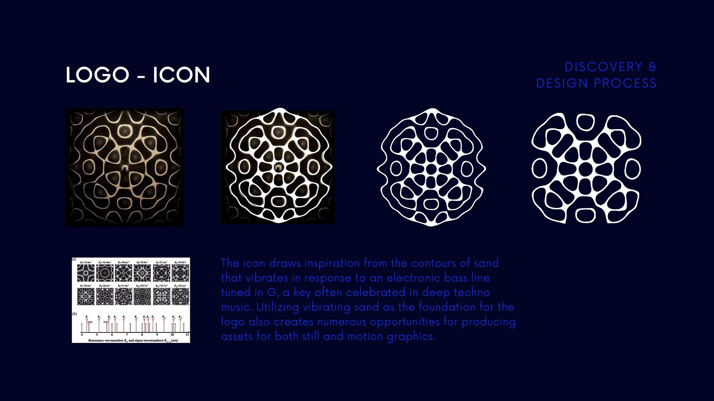
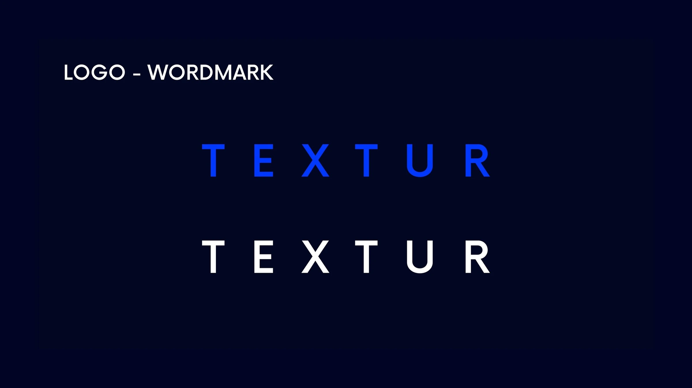
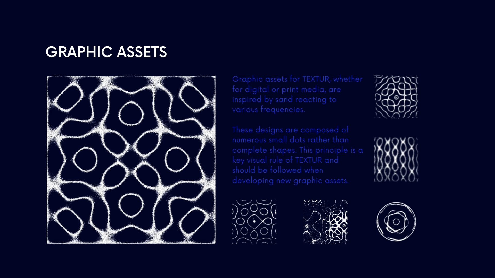
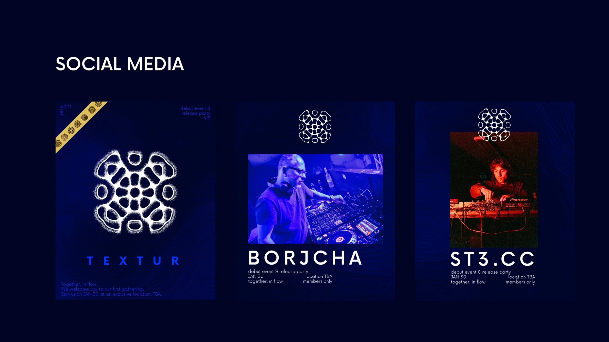
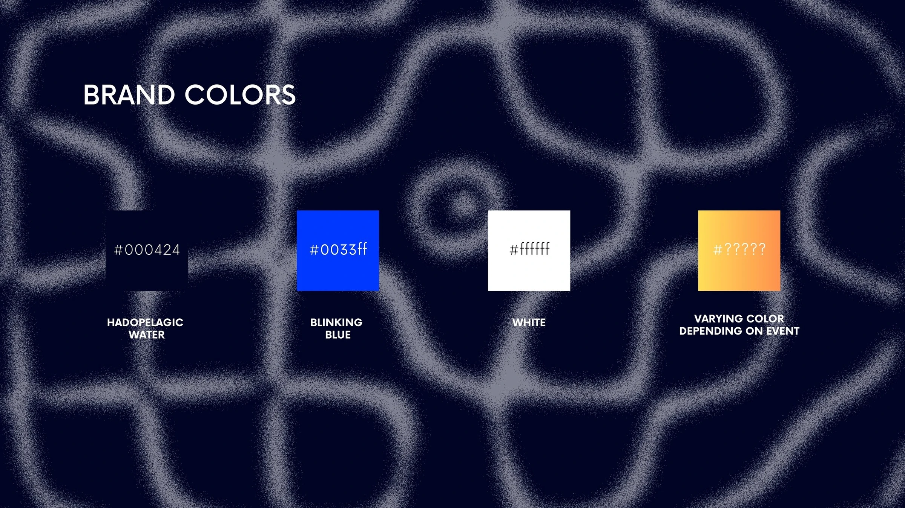
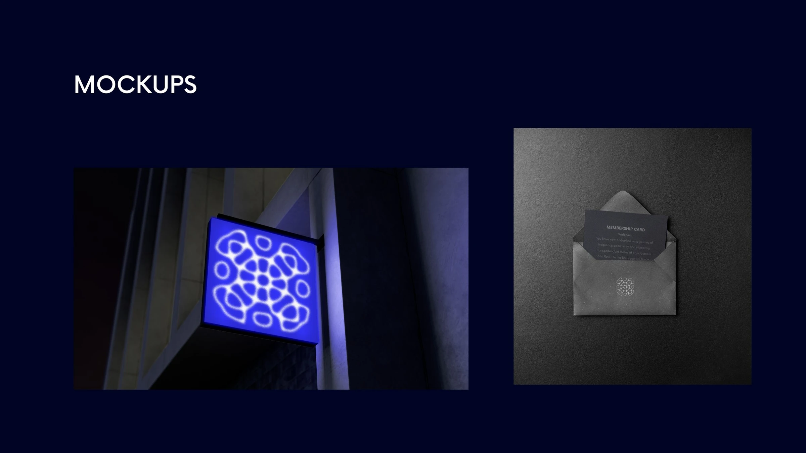

Graphic Design — Earlier Work / 01
TEXTUR Brand Showcase
TEXTUR is a Stockholm techno club and label. Its identity grew from the club’s focus on sound, space and movement.
Visual identity
I built the system around a fluid symbol, a restrained wordmark and a dark blue base. A changing accent colour lets each event look different without losing the identity.
The result is quieter than typical nightlife promotion. It leaves room for artist photography and the atmosphere of each event.





